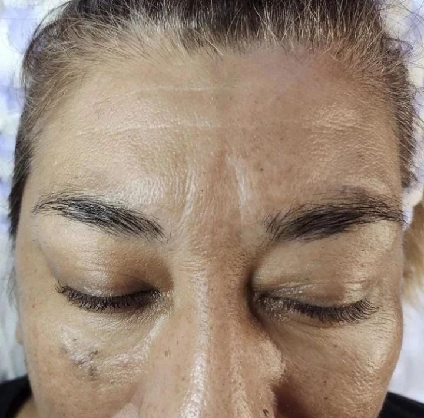
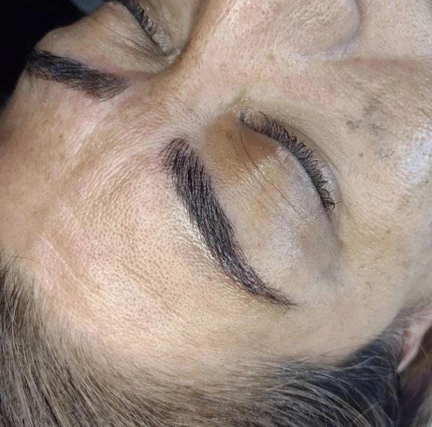

MICROBLADING
El Microblading es un novedoso tratamiento de belleza que permite tener unas cejas perfectas mediante la técnica del maquillaje semipermanente realizado pelo a pelo, permitiendo modificar la forma y el color de la ceja. Está recomendado para personas que por alguna razón quieren aumentar la densidad de sus cejas de la manera más natural posible. Por ejemplo, personas que por problemas de salud, estrés o problemas hormonales hayan tenido pérdida de vello en las cejas, o simplemente tengan las cejas despobladas y le gustaría que le hicieran una reconstrucción de las mismas. Esta técnica brinda la oportunidad de lucir unas cejas perfectas y naturales, dando como resultado un aumento de la belleza del rostro. En el caso de personas que tienen poco volumen en las cejas, el microblading hace el relleno de la ceja entera aumentando así el volumen de las mismas.
ANTES
DESPUES
